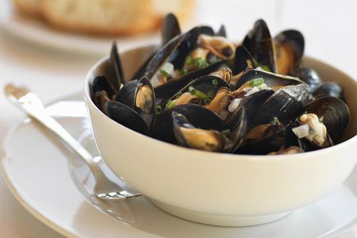

Classic French Mussels

Description
Bring Paris to your kitchen with this recipe for classic French steamed mussels!
Ingredient
- 3 tbsp - extra-virgin olive oil
- 2 - shallots, finely chopped
- 4 - garlic cloves, finely chopped
- 2 lbs - mussels, cleaned
- 1 cup - dry white wine
- 1/2 cup - heavy cream
- 4 tbsp - unsalted butter, cut into pieces
- 1/2 bunch - parsley, chopped
- Kosher salt
- Crusty bread, to serve
Directions
- Heat olive oil in large pot over medium-high heat.
- Add shallots and garlic and cook until softened, about five minutes
- Add mussels, wine, cream, butter, parsley, and season well with salt.
- Give it a good stir, cover the pot, and cook until mussels open and are cooked through, about 10 to 15 minutes
- Divide the mussels and the juices between two bowls and serve with crusty bread.